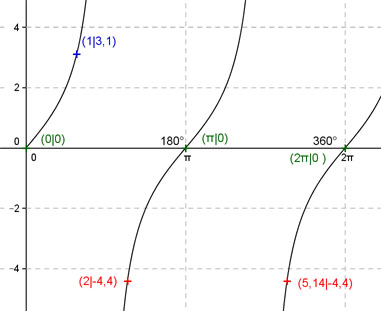

Aufgabe 151 Ergänzen Sie die Wertetabelle für x zwischen 0 und 2π: y = 2 tan x x 1 2 oder 5,14 y 3,1 -4,4 Periode = π Berechnung der Nullstellen: 2 tan x = 0 ---> Wegen x = k * π und k = 0, 1, 2 --> x1 = 0 oder x2 = π oder x3 = 2π N1 liegt bei 0 oder 0°, N2 bei π oder 180°, N3 liegt bei 2π oder 360°.  Funktionswert an einer Stelle x ermitteln: x = 1 f(1) = 2 tan 1 = 2 tan 57,3° = 3,1 gerundet. Berechnung der x-Werte für y = f(x) = -4,4: f(x) = -4,4 eingesetzt, existiert einmal zwischen 0 und π bzw. 0° und 180° und zwischen π und 2π bzw. 180° und 360° (siehe Graph). 2 tan x = - 4,4 | :2 --> tan x = - 2,2 --> x = arc tan - 2,2 = -1,144 liegt nicht im Bereich zwischen 0 und 2π --> x1 = (π - 1,144) = 2 oder x2 = (2π - 1,144) = 5,14 gerundet und α1 = 114,5° oder α2 = 294,5°.